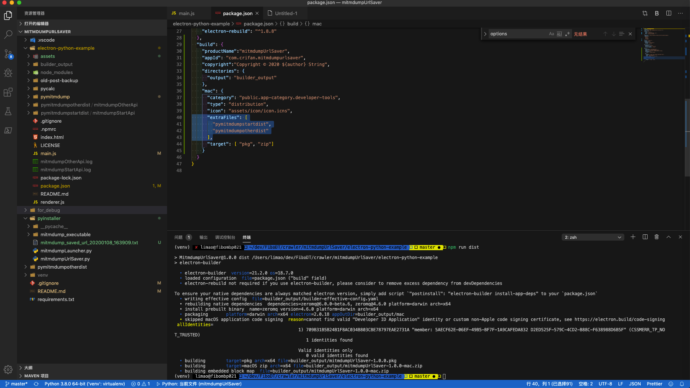
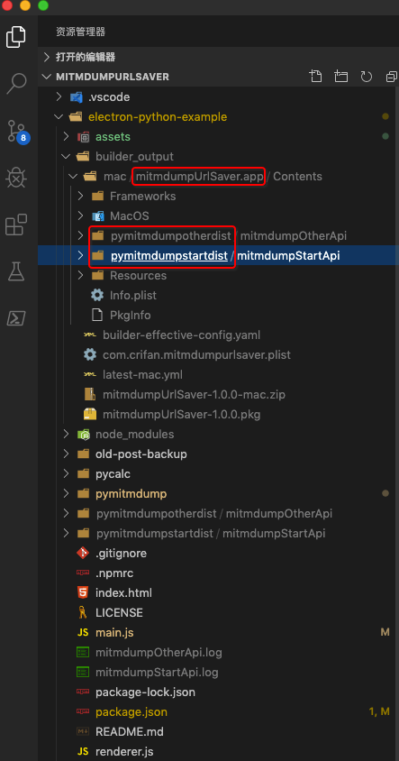

electron-builder
signing Error Command failed codesign sign
- 问题：用
npm run dist打包报错：signing file=release/mac/ElectronDemo.app identityName=Apple Development: xxx xx (xxx) identityHash=xxx provisioningProfile=none Error: Command failed: codesign --sign xxx —force - 原因：code sign方面的错误。
- 解决办法：暂未深入研究，所以只是去禁止code sign，以规避此问题。
- 禁止code sign的方法
- 先去：
export CSC_IDENTITY_AUTO_DISCOVERY=false - 再继续打包：
npm run dist
- 先去：
- 禁止code sign的方法
make-dir.js 86 catch SyntaxError Unexpected token {
- 问题：打包：
报错：npm run dist/Users/limao/dev/src/electron/electron-quick-start/node_modules/electron-builder/node_modules/fs-extra/lib/mkdirs/make-dir.js:86 } catch { ^ SyntaxError: Unexpected token { 原因：之前20200529，用：
npm install -D electron-builder安装出的是最新版本的
electron-builder："dependencies": { "electron-builder": "^22.6.1" }而新版
22.6.1有bug。解决办法：换个别的稍微旧一点的版本，比如
20.44.4：npm uninstall electron-builder npm install -D electron-builder@20.44.4
Error loading Python lib /private/var/folders .Python dlopen image not found
- 问题：
electron-builder去打包mac的app后运行报错
curPyProc.spawnargs=/var/folders/gt/5868sbcd1jq4rxvryqhy2_1sz8n0s3/T/.com.crifan.mitmdumpurlsaver.bG5MLj,4243
curPyProc.pid=81849
curPyProc stderr data: chunk=[81849] Error loading Python lib '/private/var/folders/gt/5868sbcd1jq4rxvryqhy2_1sz8n0s3/T/.Python': dlopen: dlopen(/private/var/folders/gt/5868sbcd1jq4rxvryqhy2_1sz8n0s3/T/.Python, 10): image not found
curPyProc exit: exitCode=255
- 原因：此处app中用到了已打包好的
.Python，但是却没有被打包进去，所以运行报错找不到。 - 解决办法：去把缺少的东西打包进来，相关参数：
extraFiles。
此处额外的所需要的事 ，项目根目录下的（之前用PyInstaller打包后的）2个dist文件夹：
pymitmdumpotherdistpymitmdumpstartdist
具体配置是：build中mac的extraFiles
文件：electron-python-example/package.json
"build": {
...
"mac": {
...
"extraFiles": [
"pymitmdumpstartdist",
"pymitmdumpotherdist"
],
"target": [ "pkg", "zip"]
}
}
}

如此打包后的app，其中就包括了额外的目录：

-》即可正常运行，没了.Python找不到的问题。
打包期间实现拷贝整个目录和其中二进制文件到打包后的特定目录
- 背景：希望实现把打包前的整个目录
electron-python-example/pymitmdump/mitmdump_executable及其中的子文件夹和文件，拷贝到打包后的位置electron-python-example/builder_output/mac/mitmdumpUrlSaver.app/Contents/Resources/app/pymitmdumpstartdist/mitmdumpStartApi/mitmdump_executable，从而希望后续代码能识别到。 - 解决办法：通过
extraResources设置
文件：electron-python-example/package.json
"build": {
...
"extraResources": [
{
"from": "pymitmdump/mitmdump_executable",
"to": "app/pymitmdumpstartdist/mitmdumpStartApi/mitmdump_executable",
"filter": ["**/*"]
}
],
路径中包含中文会无法启动mitmdump代理
- 问题：Electron打包的app放到别的mac中测试时，路径中有中文，导致无法正常启动mitmdump代理。
- 原因：路径中包含中文，内部启动mitmdump代理的代码，不支持非中文字符。
- 解决办法：加上兼容不同编码的字符的路径，即可：
import locale
curPlatformEncoding = locale.getpreferredencoding()
logging.info("curPlatformEncoding=%s", curPlatformEncoding)
# Mac: UTF-8
# Wind: cp936 ~= GBK ~= GB2312
curProcess = subprocess.Popen(
shellCmd,
stdout=subprocess.PIPE,
stderr=subprocess.STDOUT,
universal_newlines=True,
# encoding="UTF-8",
encoding=curPlatformEncoding,
shell=isUseShell,
)
logging.debug("curProcess=%s", curProcess)
while True:
curLineOutput = curProcess.stdout.readline()
实现了：自动判断当前系统编码
- Mac：
UTF-8 - Win：
cp936- =
GBK
- =
实现subprocess的readline内部自动解码，而不会出现解码报错问题。